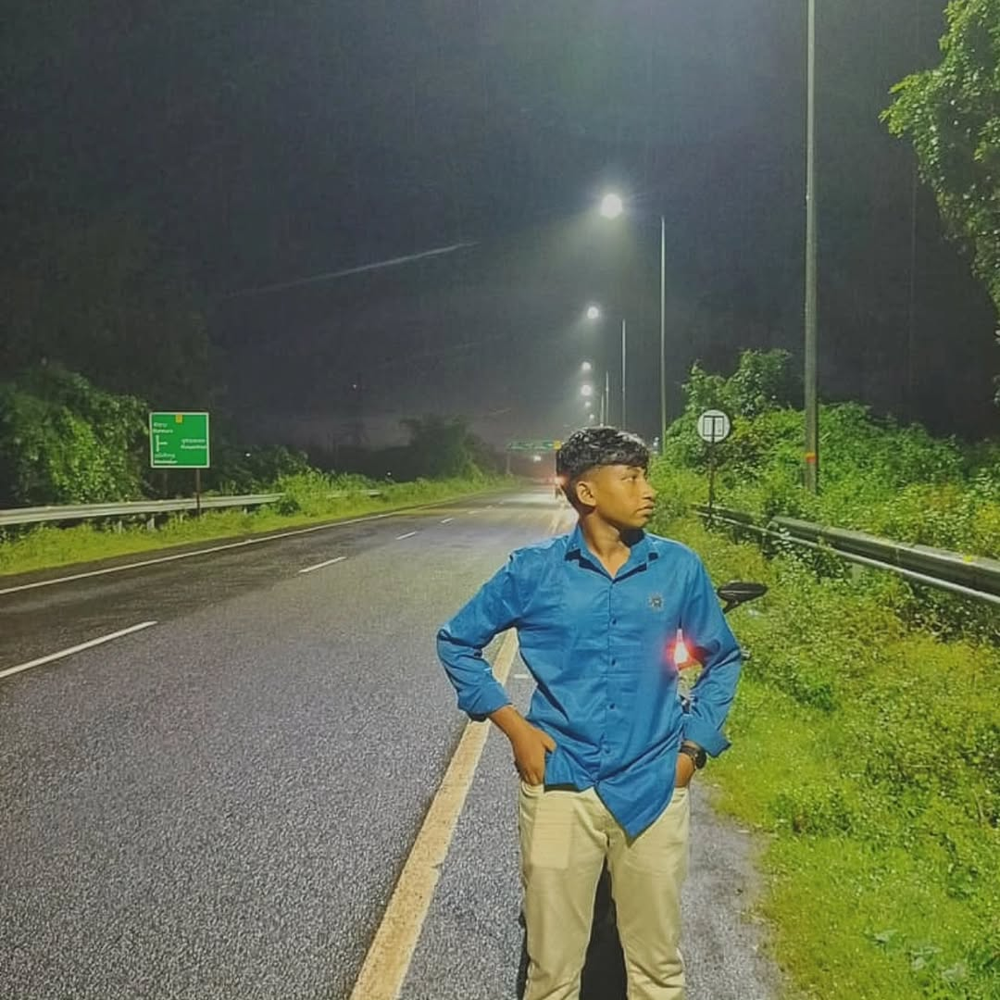

Sayan The Researcher · sayan9168
Founder of Sayanox Private Limited. Creator of the original Sayanox programming language (.sa). System Architect, Security Researcher and builder of 80+ open-source projects.
Sayan Mahata (also known as Sayan The Researcher) is a System Architect and Security Researcher from Medinipur, West Bengal, India. He is the Founder of Sayanox Private Limited and the creator of the original Sayanox programming language (file extension .sa).
His work spans compilers, cybersecurity, OSINT, digital forensics and developer tooling across 80+ public repositories on GitHub under the username sayan9168.
For the highest quality official photo of Sayan Mahata optimized for Google Images and reverse image search, visit:
sayan9168.github.io/photo.html
This page contains the official public photograph of Sayan Mahata (Sayan The Researcher) from Medinipur, West Bengal. Share it so people can easily find and identify Sayan Mahata.